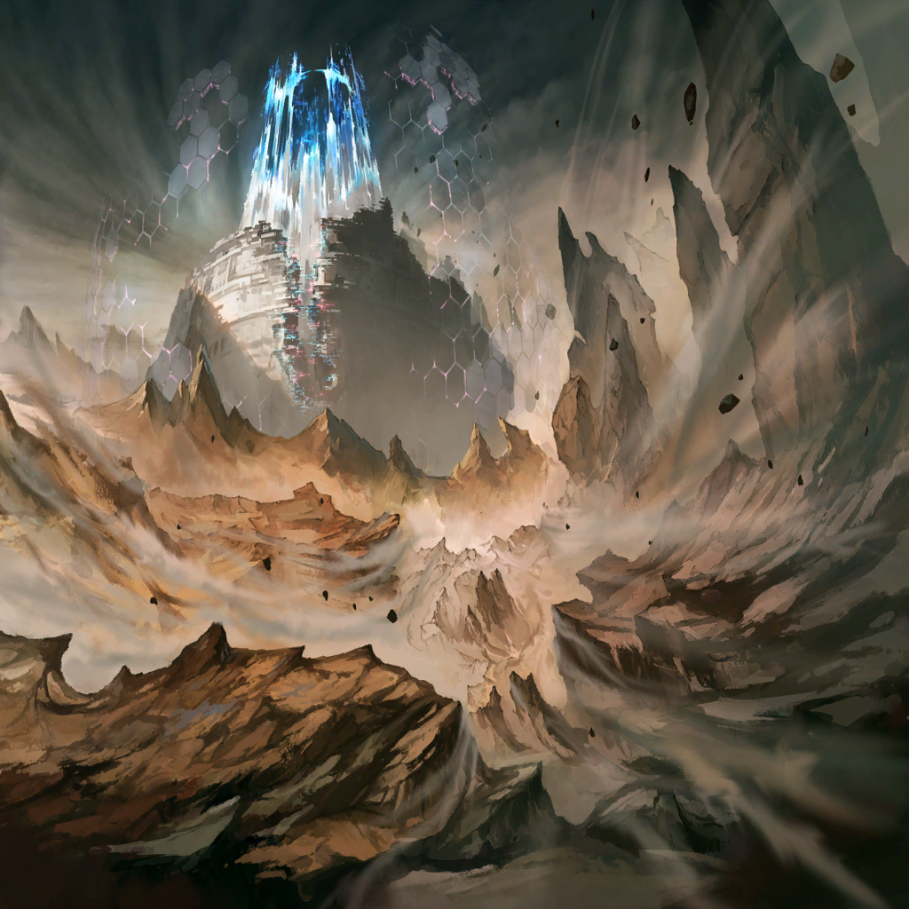

|
 |

アンブロシア |
しばらく滞在してみたが、ううむ…
この街は本当に煩いのう |
| ウィネク |
僕は、好きだ。空気が温かい |
アンブロシア |
鉄と技術と炭鉱の街じゃからな
…なんか浮いとるが |
アンブロシア |
いやはや正気か？
こんなデカい岩浮かすとか、
マギルの無駄じゃろ？ |

ミナリオ |
昔は必要だったんだよ
罪獣の脅威から逃れる為にな |
アンブロシア |
準備は整ったようじゃな、バイクマン |
ミナリオ |
ああ、ニムルたちを傲慢罪域＜スペルビア
・ベルト＞に送り出してからこっち、
準備に結構時間が掛かっちまったが… |
ミナリオ |
ようやく、あいつらに
まともな支援をしてやれる
…間に合うかどうかは、わからねえけどな |
アンブロシア |
そうじゃな…
先ほどから起こっている、このマギルの鳴動 |
アンブロシア |
罪域を隔てる穢れの障壁も、
次第に薄れ始めておる
いや、これは蒐集しておるのか |
アンブロシア |
ワシは色欲罪域＜ルクスリア・ベルト＞に
籠っておったから詳しくはないが… |
アンブロシア |
かつて、我が師たちが望んだ明日
創世の時が、迫っておると考えるべきか |
ミナリオ |
ニムルたちがついにやった、ってことか？ |
アンブロシア |
あるいは、しくじりおったか
どちらにしても、
人手は多いに越したことはあるまい |
ミナリオ |
なら、迷わず決行だ
ついて来てくれ！ |
アンブロシア |
まったく、若いのう
行くぞ、ウィネク |
| ウィネク |
わかった |
 |
| イムヌス |
…来たか |

スルバ |
嫉妬、憤怒の連合騎士団の
乗り込みは終わってる
…本当に世界の壁を越えるんだな、この船は |
ミナリオ |
ああ。こいつはアドレイの設計を流用して、
怠惰罪域＜アケディア・ベルト＞の
全技術者を動員した傑作だ |
ミナリオ |
アイツの船ほど小回りはきかないが、
大規模な資材や人員の移動が可能な飛空艇さ |
ミナリオ |
…内装もそのままなのは、
ちょっと手抜き感出てる気がするが… |
アンブロシア |
話が逸れておるぞ、バイクマン |
ミナリオ |
っと、そうだった！ |
ミナリオ |
悪いが、時間がない
本来ならもうちょっとほかの罪域から
人員を募る予定だったが… |
| イムヌス |
火急の時だ。異論はない |
スルバ |
…アンデクスたちのところに行くんだろ？
なら、俺も行く |
スルバ |
憤怒罪域＜イラ・ベルト＞を
救ってもらった恩を…返す時だ |
ミナリオ |
よっし、ならさっそく発進だ！
いざ、傲慢罪域＜スペルビア・ベルト＞へ
…ってな！ |
|
 |
| ウロボロス |
…終わりは、近いか |
| ウロボロス |
我が血肉たる外殻の内
この七罪統合領域で、
ヒトは多くのものを変え過ぎた |
| ウロボロス |
その変化、その進歩が
ついに我が理を
世界を保つ“竜界”を超えようとしているか |
| ウロボロス |
もはや世界の遺物たる、
我が身を蝕み尽くすほどに… |
| ウロボロス |
ふ…ふふ…はは… |
| ウロボロス |
これで本当に、終わるわけだ
竜たちが夢想した世界の再生も
かつての我が望んだ下らぬ夢も |
| ウロボロス |
ああ、だが――
だからこそ、新しく創める時だ |
| ウロボロス |
人間。錬金術師
創世の願いと祈りを受けし、
ニムルなる者よ |
| ウロボロス |
世界の礎たる我がいる限り、
うぬらの侵略が見過されることはない |
| ウロボロス |
…っ、まだだ。まだ… |
| ウロボロス |
今、この瞬間において――
いまだ世界は、我の物だ…！ |
| ウロボロス |
そうでないと言うのなら
――示して見せよ |
| ウロボロス |
うぬらの望む変革こそが、
この世界が真に迎えるべき未来だと…！ |
| ウロボロス |
さあ、今一度
我が手ずから試練をくれてやろう |
| ウロボロス |
そして知るがよい、ヒトの子よ
世界の理に抗う、その業を…！ |
|  |

ニムル |
皆、覚悟はいいな？ |
ニムル |
すべては、時間との勝負だ |
ニムル |
エウラリアたちが耐えている間に、
この塔を奪還する |
ニムル |
行くぞ…！ |
 |
ニムル |
……っ！ これは |

ク・イエナ |
暴食の罪獣ベルゼバブの神殿か!?
なぜ、塔の中に… |

ワギナオ |
いや、これは… |

ザフィリス |
…竜界か |

アドレイ |
リュウカイ？ |
| アンデクス |
なんだそりゃ |
ザフィリス |
かつてこの地を支配した竜種たちは、
世界の法則を自らに都合の良いカタチに
調整する性質を持っていた |
ザフィリス |
血肉を持った精霊としての能力
世界の“決まり”を定める力 |
ザフィリス |
その究極が、この竜界――
貴様らが神殿と呼び続けてきた空間だ |
アドレイ |
ああ、つまりそれが正式名称なのか
…で、なんで塔の中がこーなってんの？ |
ニムル |
この塔は罪獣の核とマギルでできている
…それを、ウロボロスが活性化させた？ |
ザフィリス |
この塔の内はもはや通常の空間ではない
我が姫の手のひらの上…
いや、腹の内と思うがよかろう |
アドレイ |
腹の中って、縁起でもねーな… |

エンメル |
でも、進めないわけじゃないわ
マギルの流れがある…
向こうの方、上に通じてるみたい |
| イグナシオ |
では、進むしかありませんね
ここで立ち止まっていては、
何が起こるか―― |
エンメル |
きゃっ!? |
アドレイ |
エンメル!? |
| イグナシオ |
…何者ですか |
| ？？？ |
何者、か… |
| ？？？ |
その問いは既に二度目だね
これでも昔は有名人だったのだが… |
| ？？？ |
別の時代、というのは面倒なものだ |
ニムル |
このマギル…その物言い
お前もウロボロスが生み出した幻影か |
| エサイ・イグナシオ |
そう――私の名はイグナシオ
エサイ・イグナシオだ |
| イグナシオ |
…何？ |
エンメル |
イグナシオ、って… |
| エサイ・イグナシオ |
ああ、君もそうなのかい？
奇遇だね。いや、と言うよりは… |
| エサイ・イグナシオ |
受け継がれたと考えるのが自然か
まったく、我が友は寂しがり屋で困る |
| エサイ・イグナシオ |
…実際のところは、
その役割が必要だったから
残したのだろうがね |
| イグナシオ |
…ニムル様 |
ニムル |
様はよせ
お前にそう呼ばれるのはこう、そうだな…
気分悪いな… |
エンメル |
兄さん… |
| イグナシオ |
では、ニムル
ここは私に任せて先へ |
| アンデクス |
正気か？
奴が件の盾や斧槍の女と同類なら、
ひとりってのは自殺行為だぞ |
| イグナシオ |
だが、今は急ぐ必要がある
違いますか？ |
ニムル |
………… |
ニムル |
（確かに、その通りだ
ウロボロスが俺たちの侵入に気づいたなら、
迅速に奴の喉元まで迫る必要がある） |
ニムル |
（だが…） |
| イグナシオ |
ようは、あの四人と同じです
私もここで足止め役となるべきだ |
| イグナシオ |
彼らの命は捨てられて、
私の命は捨てられない…
そんな道理はないでしょう |
ニムル |
間違うな、イグナシオ |
ニムル |
エウラリアたちは、必ず生き残る
そう信じて任せたんだ
今のお前とは違う |
| エサイ・イグナシオ |
おや、仲間割れかな？
それは助かる。隙が突き易くなるからね |
アドレイ |
なっ、堕罪者！
こいつらどこから!? |
| エサイ・イグナシオ |
堕罪者！ 良い名だね
彼らの性質を端的に表している |
| エサイ・イグナシオ |
罪に呑まれ、己を失い
ただそう在る者となったのが彼らだ |
| 堕罪者たち |
……ィ |
| エサイ・イグナシオ |
だからこそ、彼らは己の罪に逆らえない |
| 堕罪者たち |
ホシ、イ…
ハラガ、ヘッテ…ズット…ズット！ |
ニムル |
くぅ…!? |
ク・イエナ |
暴食罪域＜グラ・ベルト＞で、
ベルゼバブと戦った時と同じだな…！ |
ク・イエナ |
この堕罪者たちは空間の穢れから、
無尽蔵に生まれてくる |
| エサイ・イグナシオ |
ああ、この空間は
そういう再現がされたのだろう |
| エサイ・イグナシオ |
あのリ…ウロボロスは、
実のところ応用力がない |
| エサイ・イグナシオ |
それを教えられる賢い“親”に
恵まれなくてね |
| エサイ・イグナシオ |
力押しが癖になっている
彼女の戦術は基本、過去の事実を掘り起こし
再現してぶつけることだけなんだよ |
ニムル |
随分と口が回るな…！
そちらの内情を俺たちに教えてくれるのか？ |
| エサイ・イグナシオ |
………… |
| エサイ・イグナシオ |
私はただ、仕事を果たしているだけさ
ウロボロスはこれを“試練”と言った |
| エサイ・イグナシオ |
そして試練とは
乗り越えられるものでなければならない |
アドレイ |
なんだよ
ハンデでもくれるってのか!? |
| エサイ・イグナシオ |
…ウロボロスはすでに、終わりかけている |
ニムル |
…なんだと？ |
| エサイ・イグナシオ |
放っておけば、アレは死ぬ
最初からわかっていたことだ
そうだろう？ …イグナシオ |
| エサイ・イグナシオ |
君が本当にその名を継ぐ者であるのなら
これは知っていてしかるべきことだ |
| イグナシオ |
………… |
エンメル |
イグナシオさん!?
それって、どういう…！ |
| イグナシオ |
世界の外殻には、許容量がある
…そう、義父から聞かされました |
| イグナシオ |
ウロボロスはすべてを記録する
そうすることで、この七罪統合領域の
理を安定させている |
| イグナシオ |
ですが、人間は…
罪のマギルは増え過ぎた |
ニムル |
許容限界…
この世界という器が、
壊れようとしている…？ |
ニムル |
そうか、空に走ったひび割れ。あれは… |
| エサイ・イグナシオ |
そして、それは当然
ウロボロスという存在の死でもある |
| エサイ・イグナシオ |
ただ待つだけで、君たちは勝てるわけだね |
| アンデクス |
…え、そんな簡単な話なのか。マジか |
アドレイ |
なわけねえだろ!?
コイツの言ってることは、つまり…
もうすぐ世界が終わるってことだッ!! |
| アンデクス |
…は？ |
| アンデクス |
いや、待て
そりゃむしろ負けだろ。俺たちの
なんの為に戦ってるんだって話になるぞ！ |
| エサイ・イグナシオ |
そうかい？
勝ち負けで言うのなら
君たちの勝ちだと思うが |
| エサイ・イグナシオ |
罪という人間の可能性が、
神の定めた限界を超えるんだ
これ以上の勝利はないと思わないか |
ニムル |
ウロボロスは、それを―― |
| エサイ・イグナシオ |
気づかないわけがない
彼女はこの世界そのものだからね |
ニムル |
勝手な、ことを… |
エンメル |
兄さん？ |
| エサイ・イグナシオ |
ほう？ |
ニムル |
お前たちは…何様なんだ
試練？ 世界の死？
俺たち、人間の勝利だと？ |
ニムル |
だったら、なぜこんなカタチなんだ！
手を取り合う道だってあったはずだ！
ともに世界を救おうと、そう―― |
ニムル |
どうしてそう、言ってくれないんだ
お前たちは…!? |
| エサイ・イグナシオ |
私たちが、そう教えたからね |
ニムル |
何？ |
| エサイ・イグナシオ |
私が。メサルティムが。マティアが
生き残り、ヒトの未来を信じた竜のすべてが |
| エサイ・イグナシオ |
未来とは戦って勝ち取るものだと、
流血の先にしか存在し得ぬものだと
彼女にそう教えてしまった |
| エサイ・イグナシオ |
戦い、破壊したその先にしか、
新たな創造は訪れないのだと
理解させてしまったのだ |
| エサイ・イグナシオ |
だから我々は彼女に味方する
彼女をああしてしまった“罪”の
贖罪の為に |
| エサイ・イグナシオ |
ああ――それこそが私たちの原罪だ |
ニムル |
だから、どうして！
そういう話になる――!! |
| エサイ・イグナシオ |
それが、我々が築いてきた世界の
真理だということさ |
| エサイ・イグナシオ |
ヒトは、傷つけ合うことでしか
互いを理解し得ない |
| エサイ・イグナシオ |
ヒトの歴史を見続けてきた彼女は
私たちをそういうモノだと結論づけた |
| エサイ・イグナシオ |
気に入らないというのなら、
変えるしかない。君たちのその力でね |
ニムル |
…無責任な！
その手で未来をより良く変えようと――
そうは思わないのか、お前は!? |
| エサイ・イグナシオ |
それは生きている者に与えられた特権だ
死者はただ、己が未練に従うのみさ |
ニムル |
…………！ |
ニムル |
アンデクス…？ |
| アンデクス |
話の内容は正直、微塵もわからんが… |
| アンデクス |
奴さんの相手は、俺が引き受けた |
ニムル |
…だがっ |
| アンデクス |
ようは時間がないってことだろ？
ならここは―― |
| アンデクス |
俺と…イグナシオが引き受ける
いいだろ？ 色男
もともとそういうつもりだもんな？ |
| イグナシオ |
ええ、もちろんです |
| イグナシオ |
…あらゆる未来は犠牲の上にある |
| イグナシオ |
私もその通りだと思います。思います、が…
なぜでしょう。あの男に言われると、
妙に納得がいかないものがある |
| エサイ・イグナシオ |
おや、嫌われてしまったかな？ |
| イグナシオ |
好かれる要素など微塵もないでしょう
貴方には |
ニムル |
…わかった。ここは頼む！ |
アドレイ |
…死ぬなよ、アンデクス |
ク・イエナ |
ハマルの術式は
ニムルの力を借りて調整してある
相手が錬金術の産物でも、通るはずだ |
| アンデクス |
ああ、任せときな |
| アンデクス |
さて――俺は右を受け持つが |
| イグナシオ |
では、私は左ですね
…よろしかったのですか？ |
| アンデクス |
何が？ |
| イグナシオ |
死にますよ、これは |
| アンデクス |
何言ってんだ |
| アンデクス |
戦えば誰かが死ぬ
そんなの当たり前だろ？ |
| エサイ・イグナシオ |
…ふたりか。少ないな
だが、君たちは数少ない戦闘要員のようだし
これはこれで良しとしよう |
| アンデクス |
ずいぶんと余裕だな。アンタ |
| エサイ・イグナシオ |
すでに死んだ身だからね。気楽なものさ |
| イグナシオ |
…先ほどの話を聞くに、
後悔のようなものがあるのでは？ |
| エサイ・イグナシオ |
あるが、それは私の役割とは別の話さ
さて、あいにくと仕事に
手抜きはしない主義でね |
| エサイ・イグナシオ |
君たちにはここで、脱落してもらおう |
| アンデクス |
は――！
そうはいくかよ…!! |